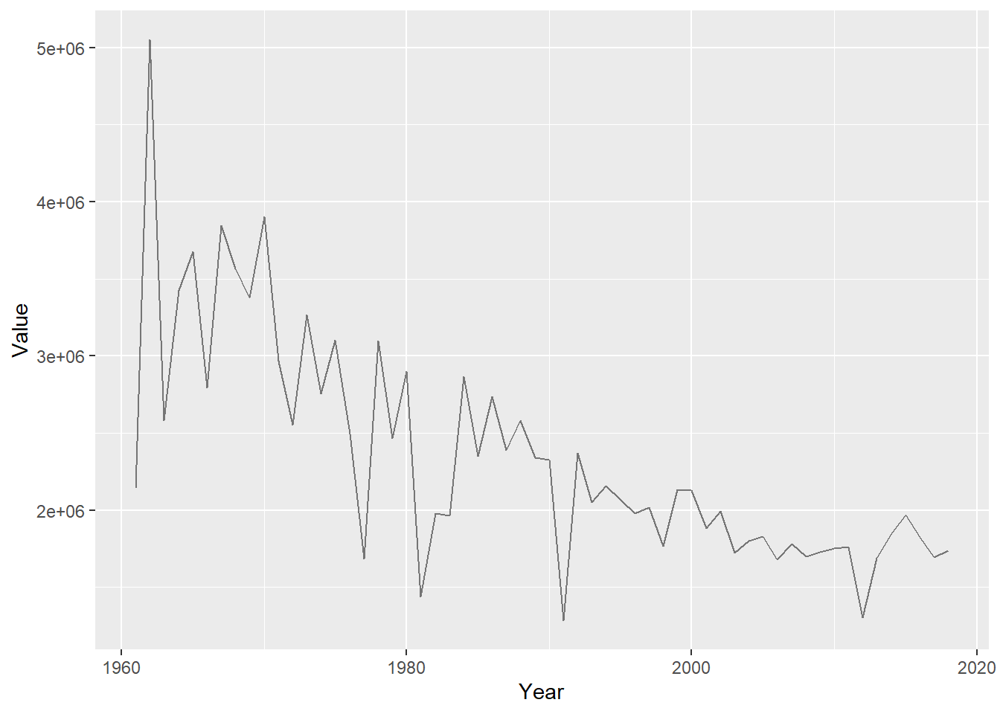

Chapter 3 World open data
3.1 Sources
3.1.1 World Bank Open data
The World Bank collects and processes large amounts of data. These data have been made available to the public with different services and platforms.
Open Data Catalog: It is a listing of available World Bank datasets that we can browe by data type (Time Series, Microdata, and geospatial data) or by countries/regions.
- Time Series data: Datasets and Indicators level data that is a sequence of numbers collected at regular intervals over a period of time (Examples: Unemployement rate, labor force, urban population…)
- Microdata: Unit-level data obtained from sample surveys, censuses, and administrative systems (Examples: Employment And Welfare Survey, Demographic And Health Survey… )
- Geospatial: Data that has explicit geographic positioning information in vector or raster format (Examples: World - Terrain Elevation Above Sea Level, World Subnational Boundaries, World - Photovoltaic Power Potential…)
World Development Indicators: The World Development Indicators is a compilation of relevant, high-quality, and internationally comparable statistcs about global development and the fight against poverty. The database contains 1600 time series indicators for 217 economies and more than 40 country groups, with data for many indicators going back more than 50 years. Data is accessible by querying online th database using DataBank tool, by API or bulk donloads. The different datasets are categorized witin six themes: poverty and inequality, people, environment, eonomy, states and markets and global links. The following tables list some featured indicators provided in these themes.
- Poverty and shared prosperity: It presents indicators that measure progress toward the World Bank Group’s twin goals of ending extreme poverty by 2030 and promoting shared prosperity in every country in a sustainable manner.
library(knitr)
library(kableExtra)
kable(WDI_Poverty_and_Inequality[,-1]) %>%
kable_styling(bootstrap_options = c("striped", "hover", "condensed", "responsive"),
font_size = 12) %>%
scroll_box(width = "100%", height = "400px")| Sub.themes | Featured.indicators | Indicator.description |
|---|---|---|
| Poverty rates at national poverty lines | Poverty headcount ratio at national poverty lines | The percentage of the population living below the national poverty lines. |
| Poverty gap at national poverty lines | The mean shortfall from the poverty lines (counting the nonpoor as having zero shortfall) as a percentage of the poverty lines | |
| Poverty rates at international poverty lines | Poverty headcount ratio at $1.90 a day | The percentage of the population living on less than $1.90 a day. |
| Distribution of income or consumption | GINI index | It measures the extent to whoch the distribution of income among individuals within an economy deviates frome a perfectly equal distribution. |
| Shared prosperity | Annualized average growth rate in per capita real survey mean consumption or income | The annualized average growth rate in per capita real consumption or income of the bottom 40% of the population |
| Survey mean consumption or income per capita, bottom 40% of population | Mean consumption or income per capita |
- People: It contains indicators for education, health, jobs, population, and gender that help capture the quality of people’s lives and provide a multidimensional portrait of the progress of societies.
kable(WDI_People[,-1]) %>%
kable_styling(bootstrap_options = c("striped", "hover", "condensed", "responsive"),
font_size = 12) %>%
scroll_box(width = "100%", height = "400px")| Sub.themes | Featured.indicators | Indicator.description | |
|---|---|---|---|
| 7 | Population dynamics | Population, total | Counting of all residents of countries. |
| 8 | Population growth (annual %) | The exponential rate of growth of midyear population from year t-1 to t. | |
| 9 | Birth rate, crude | The number of live births occuring during the year, per 1000 population estimated at midyear. | |
| 10 | Death rate, crude | The number of deaths occuring during the year, per 1000 population estimated at midyear. | |
| 11 | Fertility rate, total | The number of children that would be born to a woman. | |
| 12 | Life expectancy at birth | The number of years a newborn infant would live if prevailing patterns of mortality at the time of its birth were to stay the same throughout its life. | |
| 13 | Education | Government expenditure on education | General government expenditure on education as a percentage of GDP. |
| 14 | School enrollment | Ratio of total enrollment (primary, secondary) | |
| 15 | Literacy rate, youth total | The percentage of people ages 15-24 who can both read and write. | |
| 16 | Labor | Labor force participation rate | The proportion of the population ages 15 and older that is economically active. |
| 17 | Emplyment by domain | The percentage of employment in agriculture, industry and services | |
| 18 | Employment to population ratio | The proportionof a country’s population that is employed. | |
| 19 | Health | Maternal mortality ratio | The number of women who die from pregnancy-related causes. |
| 20 | Mortality from CVD, cancer, diabetes or CRD between exact ages 30 and 70 | The percent of 30 y.o people who would die from these diseases. | |
| 21 | Mortality caused by road traffic injury | Road traffic fatal injury deaths per 100,000 population | |
| 22 | Gender | Ratio of female to male labor force participation rate | Dividing female labor force participation rate by male labor force participation rate |
- Environment: It shows how the state of the planet, as well as our use of natural resources, and the observed impacts.
kable(WDI_Environment[,-1]) %>%
kable_styling(bootstrap_options = c("striped", "hover", "condensed", "responsive"),
font_size = 12) %>%
scroll_box(width = "100%", height = "300px")| Sub.themes | Featured.indicators | Indicator.description | |
|---|---|---|---|
| 23 | Agriculture | Agricultural land | The share of land area that is arable, under permanent crops, and under permanent pastures. |
| 24 | Climate | CO2 emissions | CO2 emission in tons per capita |
| 25 | PM2.5 air pollution | The average level of exposure of a nation’s population to concentrations of PM2.5. | |
| 26 | Average precipitation in depth | The ong-term average in depth (over space and time) of annual precipitation in the country (mm per year) | |
| 27 | Energy and mining | Energy intensity level of primary energy | The ratio between energy supply and gross domestic product. It is an indication of how much energy is used to produce one unit of economic output. |
| 28 | Renewable energy consumption | The share of renewables energy in total final enegy consumption | |
| 29 | Renewable electricity output | The share of electricity generated by renewable power plants in total electricity generated by all types of plants | |
| 30 | Environment | Forest area | Percentage of land under natural or planted stands of trees. |
| 31 | Total natural resources rents | The sum of oil rents, natural gas rents, coal rents, mineral rents, and forest rents. | |
| 32 | Urban and rural development | People using at least basic drinking water service | The percentage of peaple using at least basic water services |
| 33 | Water and sanitation | Renewable internal freshwater resources per capita | Internal renewable resources (river flows and groundwater from rainfall) |
- Economy: The indicators within the Economy section allow us to analyze various aspects of both national and global economic activity. As countries produce goods and services, and consume these domestically or trade internationally, economic indicators measure levels and changes in the size and structure of different economies, and identify growth and contractions.
kable(WDI_Economy[,-1]) %>%
kable_styling(bootstrap_options = c("striped", "hover", "condensed", "responsive"),
font_size = 12) %>%
scroll_box(width = "100%", height = "400px")| Sub.themes | Featured.indicators | Indicator.description | |
|---|---|---|---|
| 34 | Growth and economic structure | GDP | The sum of gross value added by all resident producers in the economy. |
| 35 | GDP growth | Annual percentage growth rate of GDP at market prices. | |
| 36 | Agriculture, industry, manifacturing, services: value added | Annual growth rate for agricultural, industry, manifacturing, services value added based on constant local currency. | |
| 37 | Gross capital formation | Annual growth rate of gross capital formation | |
| 38 | Exports of goods and services | Annual growth rate of exports of goods and services | |
| 39 | Imports of goods and services | Annual growth rate of imports of goods and services | |
| 40 | Income and savings | GNI per capita, Atlas method | The gross national income divided by the midyear population. |
| 41 | Gross savings | Gross national income less total consumption, plus net transfers. | |
| 42 | Prices and terms of trade | Consumer price index | It reflects changes in the cost to the average consumer of acquiring a basket of goods and services |
| 43 | Labor and productivity | GDP per person employed | Gross domestic product divided by total employment in the economy. |
- States and markets: States and markets data measure the quality of the business environment, financial system development, transport infrastructure, ICT, science and technology, government, and policy performance.
kable(WDI_States_and_Markets[,-1]) %>%
kable_styling(bootstrap_options = c("striped", "hover", "condensed", "responsive"),
font_size = 12) %>%
scroll_box(width = "100%", height = "400px")| Sub.themes | Featured.indicators | Indicator.description | |
|---|---|---|---|
| 44 | Business environment | Time required to start a business | The number of calendar days needed to complete the procedures to legally operate a business. |
| 45 | Financial access and stability | Depositors with commercial bank | The reported number of deposit account holders at commercial banks. |
| 46 | Government finance and taxes | Revenue, excluding grants | Cash receipts from taxes, social contributions, and other revenues. |
| 47 | Expense | Cash payments for operating activities of the government in providing goods and services. | |
| 48 | Military and fragile situations | Military expenditure | It includes all current and capital expenditures on the armed forces. |
| 49 | Armed forces personnel, total | Number of active military personnel. | |
| 50 | Infrastructure and communications | Air transport, passengers carried | It includes both domestic and international aircraft passengers |
| 51 | Mobile cellular subscriptions | Number of mobile cellular subscriptions | |
| 52 | Science and innovation | Research and development expenditure | Expenditure on research and development as a percent of GDP. |
| 53 | Scientific and technical journal articles | The number of sceintific and engineering articles published in sceintific journal. |
- Global links: The Global Links indicators provide an overview of the flows and associations that enable the world’s economy—and the economies of individual countries—to grow and expand. These indicators measure the size and direction of these flows, and document policy interventions such as tariffs, trade facilitation, and aid flows.
kable(WDI_Global_Links[,-1]) %>%
kable_styling(bootstrap_options = c("striped", "hover", "condensed", "responsive"),
font_size = 12) %>%
scroll_box(width = "100%", height = "400px")| Sub.themes | Featured.indicators | Indicator.description | |
|---|---|---|---|
| 54 | External debt | External debt stocks, total | The sum of public and private nonguaranteed long-term debt and short term debt. |
| 55 | Trade | Merchandise trade | The sum of merchandise exports and imports divided by the value of GDP. |
| 56 | Refugees | Refugee population by country or territory of asylum | Number of refugee population |
| 57 | Tourism | International tourism, receipts | Expenditures by international inbound visitors (% of total exports) |
| 58 | Migration | Net migration | The net total migrants |
DataBank: DataBank is an analysis and visualisation tool that contains collections of time series data on a variety of topics. You can create your own queries; generate tables, charts, and maps; and easily save, embed, and share them.
Open finances: Open Finances makes World Bank Group’s financials available for everybody to explore. They are orgnaized within different categories: loans and credits, financial reporting, shareholder equity, procurement, projects, budget…
Global Consumption Database: The Global Consumption Database is a one-stop source of data on household consumption patterns in developing countries. It is designed to serve a wide range of users—from researchers seeking data for analytical studies to businesses seeking a better understanding of the markets into which they are expanding or those they are already serving.
Microdata library: Provides acces to data collected through sample surveys of households, business establishments or other facilities.
3.1.2 World Health Organization
The Global Health Observatory data repository is an initiative of the World Health Organization to share data (through their website) on global health, including statistics by country and information about specific diseases and health measures. It provides access to over 1000 indicators on priority health topics including mortality and burden of diseases, the Millennium Development Goals (child nutrition, child health, maternal and reproductive health, immunization, HIV/AIDS, tuberculosis, malaria, neglected diseases, water and sanitation), non communicable diseases and risk factors, epidemic-prone diseases, health systems, environmental health, violence and injuries, equity among others.
We can use th WHO R package to collect the Global Health Observatory data.
##
## Attaching package: 'dplyr'## The following object is masked from 'package:kableExtra':
##
## group_rows## The following objects are masked from 'package:stats':
##
## filter, lag## The following objects are masked from 'package:base':
##
## intersect, setdiff, setequal, union## Warning: `as_data_frame()` is deprecated as of tibble 2.0.0.
## Please use `as_tibble()` instead.
## The signature and semantics have changed, see `?as_tibble`.
## This warning is displayed once every 8 hours.
## Call `lifecycle::last_warnings()` to see where this warning was generated.## # A tibble: 6 x 3
## label display url
## <chr> <chr> <chr>
## 1 MDG_0000~ Infant mortality rate (probability~ https://www.who.int/data/gho/in~
## 2 MDG_0000~ Adolescent birth rate (per 1000 wo~ https://www.who.int/data/gho/in~
## 3 MDG_0000~ Contraceptive prevalence (%) https://www.who.int/data/gho/in~
## 4 MDG_0000~ Unmet need for family planning (%) https://www.who.int/data/gho/in~
## 5 MDG_0000~ Under-five mortality rate (probabi~ https://www.who.int/data/gho/in~
## 6 MDG_0000~ Median availability of selected ge~ https://www.who.int/data/gho/in~To find datasets based on specific thematics w can use regular expresssions for searching in existing datasets.
# searching for datasets related to "life expectancy"
codes[grepl("[Ll]ife expectancy", codes$display), ]## # A tibble: 4 x 3
## label display url
## <chr> <chr> <chr>
## 1 WHOSIS_00~ Life expectancy at birth (~ https://www.who.int/data/gho/indicator~
## 2 WHOSIS_00~ Healthy life expectancy (H~ https://www.who.int/data/gho/indicator~
## 3 WHOSIS_00~ Life expectancy at age 60 ~ https://www.who.int/data/gho/indicator~
## 4 WHOSIS_00~ Healthy life expectancy (H~ https://www.who.int/data/gho/indicator~Once, we identify a dataset code we can collect the data using get_data command.
## # A tibble: 6 x 7
## country sex region gho year publishstate value
## <chr> <chr> <chr> <chr> <dbl> <chr> <dbl>
## 1 Rwanda Male Africa Life expectancy at birth (~ 2001 Published 43.5
## 2 Rwanda Female Africa Life expectancy at birth (~ 2001 Published 49.5
## 3 Rwanda Both sexes Africa Life expectancy at birth (~ 2003 Published 50.2
## 4 Rwanda Male Africa Life expectancy at birth (~ 2004 Published 49
## 5 Rwanda Both sexes Africa Life expectancy at birth (~ 2006 Published 56.7
## 6 Rwanda Male Africa Life expectancy at birth (~ 2007 Published 55.2Now, we can plot the evolution of average life expectancy by region.
library(ggplot2)
df %>%
filter(sex == "Both sexes") %>%
group_by(region, year) %>%
summarise(value = mean(value)) %>%
ggplot(aes(x = year, y = value, color = region, linetype = region)) +
geom_line(size = 1) +
theme_light(9) +
labs(x = NULL, y = "Life expectancy at birth (years)\n",
linetype = NULL, color = NULL,
title = "Evolution of life expectancy (by region)\n")
3.1.3 Food and Agriculture Organization of the United Nations
Food and Agriculture Organizationis responsible for the compilation, analysis and dissemination of a comprehensive variety of statistical data on food, agriculture and the sustainable management of natural resources. The organization provides free and unrestricted access to 16 major databases and produces publications with key statistical content covering different topics.
kable(FAO_opendata) %>%
kable_styling(bootstrap_options = c("striped", "hover", "condensed", "responsive"),
font_size = 12) %>%
scroll_box(width = "100%", height = "500px")| Themes | Database | Description |
|---|---|---|
| Agriculture | FAOSTAT | It is the world’s most comprehensice statsitical database on food, agriculture, fisheries, forestry, natural resources management and nutrition. |
| Food and Agriculture Microdata | It provides an inventory of micro-level datasets collected through farm and household surveys which contain information related to agriculture, food security and nutrition. | |
| Food loss and Food waste database | It contains data and information from openly accessible reports and studies measuring food loss and waste across food products, stages of the value chain, and geographical areas. | |
| Fishery and aquaculture | FishStat Database | It provides comprehensive fisheries and aquaculture statistics, structured within data collections on a global and regional basis. |
| Forestry | Global Forest Resources Assessment Database | It provides essential information for understanding the extent of forest resources, their condition, management and uses. |
| Food prices and market information | Agricultural Market Information System Database | It provides market information on four grains particularly important in international food markets: wheat, maize, rice and soybeans. |
| Food Price Monitoring and Analysis | It contains latest information and analysis on domestic prices of basic foods mainly in developing countries, complementing FAO analysis on international markets. | |
| Economic, social and rural development | AIDmonitor | It aims to improve understanding of Official Development Assistance (ODA) funding flows in food and agriculture-related sectors. |
| Rural Livelihoods Information System | It provides indicators of agricultural income and rural livelihoods. | |
| Gender and Land Rights Database | A platform to highlight the major political, legal and cultural factors that influence the realisation of women’s land rights throughout the world. | |
| Food security and nutrition | International Network of Food Data Systems | INFOODS is a worldwide network of food composition experts aiming at improving the quality, availability, comparability, reliability and use of food composition data. |
| Global Individual Food consumption data | It provides microdata sets and ready-to-use indicators on individual food consumption, based on food consumption surveys conducted at national and subnational level. | |
| Natural genetic and biodiversity resources | AQUASTAT | It provides comprehensive information related to water resources, water uses and agricultural water management across the world. |
| Domestic Animal Diversity Information System | It provides access to searchable databases of breed-related information and photos and links to other online resources on livestock diversity. | |
| WIEWS | World onformation and early warning system on plant genetic resources for food and agriculture | |
| Sustainable Development Goals | SDG datasets | FAO’s Statistical Capacity Assessment survey for SDG Indicators provides insights about member countries’ national statistical systems in regard to their capacity to monitor and report the 21 SDG indicators: zero hunger, gender equality, clean water administration, responsable consumption and production, life below water, life onland… |
- Samples of FAO data:
Here is an example of an extraction of apple production data in France
kable(FAOSTAT_data[ ,c("Domain","Area","Element","Item","Year", "Unit","Value")]) %>%
kable_styling(bootstrap_options = c("striped", "hover", "condensed", "responsive"),
font_size = 12) %>%
scroll_box(width = "100%", height = "600px")| Domain | Area | Element | Item | Year | Unit | Value |
|---|---|---|---|---|---|---|
| Crops | France | Production | Apples | 1961 | tonnes | 2142000 |
| Crops | France | Production | Apples | 1962 | tonnes | 5050000 |
| Crops | France | Production | Apples | 1963 | tonnes | 2581000 |
| Crops | France | Production | Apples | 1964 | tonnes | 3424000 |
| Crops | France | Production | Apples | 1965 | tonnes | 3675000 |
| Crops | France | Production | Apples | 1966 | tonnes | 2796000 |
| Crops | France | Production | Apples | 1967 | tonnes | 3846000 |
| Crops | France | Production | Apples | 1968 | tonnes | 3568000 |
| Crops | France | Production | Apples | 1969 | tonnes | 3377000 |
| Crops | France | Production | Apples | 1970 | tonnes | 3903000 |
| Crops | France | Production | Apples | 1971 | tonnes | 2967000 |
| Crops | France | Production | Apples | 1972 | tonnes | 2553000 |
| Crops | France | Production | Apples | 1973 | tonnes | 3265000 |
| Crops | France | Production | Apples | 1974 | tonnes | 2757000 |
| Crops | France | Production | Apples | 1975 | tonnes | 3104000 |
| Crops | France | Production | Apples | 1976 | tonnes | 2497000 |
| Crops | France | Production | Apples | 1977 | tonnes | 1687000 |
| Crops | France | Production | Apples | 1978 | tonnes | 3100000 |
| Crops | France | Production | Apples | 1979 | tonnes | 2464000 |
| Crops | France | Production | Apples | 1980 | tonnes | 2902000 |
| Crops | France | Production | Apples | 1981 | tonnes | 1437000 |
| Crops | France | Production | Apples | 1982 | tonnes | 1977000 |
| Crops | France | Production | Apples | 1983 | tonnes | 1965000 |
| Crops | France | Production | Apples | 1984 | tonnes | 2868000 |
| Crops | France | Production | Apples | 1985 | tonnes | 2349000 |
| Crops | France | Production | Apples | 1986 | tonnes | 2738000 |
| Crops | France | Production | Apples | 1987 | tonnes | 2388000 |
| Crops | France | Production | Apples | 1988 | tonnes | 2582000 |
| Crops | France | Production | Apples | 1989 | tonnes | 2340000 |
| Crops | France | Production | Apples | 1990 | tonnes | 2326000 |
| Crops | France | Production | Apples | 1991 | tonnes | 1283211 |
| Crops | France | Production | Apples | 1992 | tonnes | 2371861 |
| Crops | France | Production | Apples | 1993 | tonnes | 2050983 |
| Crops | France | Production | Apples | 1994 | tonnes | 2157952 |
| Crops | France | Production | Apples | 1995 | tonnes | 2063809 |
| Crops | France | Production | Apples | 1996 | tonnes | 1980069 |
| Crops | France | Production | Apples | 1997 | tonnes | 2018979 |
| Crops | France | Production | Apples | 1998 | tonnes | 1765375 |
| Crops | France | Production | Apples | 1999 | tonnes | 2133296 |
| Crops | France | Production | Apples | 2000 | tonnes | 2130274 |
| Crops | France | Production | Apples | 2001 | tonnes | 1882109 |
| Crops | France | Production | Apples | 2002 | tonnes | 1995306 |
| Crops | France | Production | Apples | 2003 | tonnes | 1721662 |
| Crops | France | Production | Apples | 2004 | tonnes | 1800177 |
| Crops | France | Production | Apples | 2005 | tonnes | 1829166 |
| Crops | France | Production | Apples | 2006 | tonnes | 1679328 |
| Crops | France | Production | Apples | 2007 | tonnes | 1781947 |
| Crops | France | Production | Apples | 2008 | tonnes | 1701752 |
| Crops | France | Production | Apples | 2009 | tonnes | 1729615 |
| Crops | France | Production | Apples | 2010 | tonnes | 1751269 |
| Crops | France | Production | Apples | 2011 | tonnes | 1762640 |
| Crops | France | Production | Apples | 2012 | tonnes | 1306333 |
| Crops | France | Production | Apples | 2013 | tonnes | 1688158 |
| Crops | France | Production | Apples | 2014 | tonnes | 1847551 |
| Crops | France | Production | Apples | 2015 | tonnes | 1968628 |
| Crops | France | Production | Apples | 2016 | tonnes | 1823123 |
| Crops | France | Production | Apples | 2017 | tonnes | 1695949 |
| Crops | France | Production | Apples | 2018 | tonnes | 1737412 |
## [1] Apples
## Levels: Apples## Min. 1st Qu. Median Mean 3rd Qu. Max.
## 1283211 1786504 2131785 2349757 2752250 5050000
3.1.4 United Nations
The United Nations (UN) is an intergovernmental organization that aims to maintain international peace and security, develop friendly relations among nations, achieve international cooperation, and harmonize their actions. The UN system includes a multitude of specialized agencies, such as the World Bank Group, the World Health Organization, the World Food Programme, UNESCO, and UNICEF. The United Nations Statistics Division is committed to the advancement of the global statistical system. They compile and dissiminate global statistical information, develop standards and norms for statistical activities, and support countries’ efforts to strengthen their national statistical systems.
UN Comtrade Database: UN COMTRADE is the pseudonym for United Nations International Trade Statistics Database. It contains well over 3 billion data records since 1962 and is available publicly on the internet. In addition, it offers public and premium data API for easier integration/download. Time series of data for reporter countries starts as far back as 1962 and goes up to the most recent completed year. Current data is published annually in the International Trade Statistics Yearbook.
UNdata: UNdata is a web-based data service providing access to a variety of statistical resources compiled by the United Nations (UN) statistical system and other international agencies. Th UNdata contains 22 databases presenting various topics. Here is a sample of published databases:
- Energy statistics Database
- Environment Statistics Database
- Industrial Commodity Statistics Database
- International Financial Statistics
- World Tourism Data These data are produced from more than 20 international statistical sources compiled by the UN statistical system and other international agencies: Food and Agriculture Organization, International Labour Organization, International Monetary Fund, The World Bank, UNESCO Institute for Statistics, United Nations Children’s Fund, World Meteorological Organization, World Tourism Organization…
The UNESCO Institute for Statistics: The UNESCO Institute for Statistics (UIS) is the official and trusted source of internationally-comparable data on education, science, culture and communication. The UIS provides free access to data for all UNESCO countries and regional groupings from 1970 to the most recent year available. Databases are accessible via: data rowser, bulk data download service and API. Data is organized in different themes: Education (out-of-school childre, literacy, financial resources in education…), SDG 4 (sustaiable development goal indicators), equity, science and innovation, culture (culture employement, feature films, international trade in cultural goods…), communication and information, demographic and socio-economic.
Sustainable Development Goals: The Sustainable Development Goals (SDGs) are a collection of 17 global goals designed to be a “blueprint to achieve a better and more sustainable future for all”. The SDGs, set in 2015 by the United Nations General Assembly and intended to be achieved by the year 2030.
SDG indicators
The Sustainable Development Goals are: No Poverty, Zero Hunger, Good Health and Well-being, Quality Education, Gender Equality, Clean Water and Sanitation, Affordable and Clean Energy, Decent Work and Economic Growth, Industry, Innovation, and Infrastructure, Reducing Inequality, Sustainable Cities and Communities, Responsible Consumption and Production, Climate Action, Life Below Water, Life On Land, Peace, Justice, and Strong Institutions, and Partnerships for the Goals.
The United Nations provide platform of the Global SDG Indicators Database. This platform provides access to data compiled through the UN System in preparation for the Secretary-General’s annual report on “Progress towards the Sustainable Development Goals”.
We can also explore these indicators by the mean of SDG Tracker: a free, open-access resource where users can track and explore global and country-level progress towards each of the 17 Sustainable Development Goals through interactive data visualizations.
Sustainable Development Report Dashboards 2019
3.1.5 The World Resources Institute
World Resources Institute (WRI) is a global research organization that spans more than 60 countries. Is mission consists of promoting environmental sustainability and human health and well-being. WRI provides open access to reliable data related to global environment issues (forests monitoring, climate change, water scarcity…). In addition, WRO produces maps, charts, and visual resources based on their datasets.
WOrld Greenhouse Gas EMission in 2016 (WRI)
- Water, peace and security: The Water, Peace, and Security tool is a data platform that help identify water-related security risks, and allow stakeholders to take action at an early stage.
- Energy Access Explorer: The Energy Access Explorer is an online, open-source, interactive platform that uses mapping to visualize the state of energy access in unserved and underserved areas. It analyzes credible and public data to make the connection between the demand and supply of energy.
- Global Forest Watch: The Global Forest Watch iis an online platform that provides data and tools for monitoring forests. By harnessing cutting-edge technology, GFW allows anyone to access near real-time information about where and how forests are changing around the world.
- Resource Watch: Resource Watch is an open data visualization platform with over 200 available data sets on topics ranging from climate change to human migration, deforestation to air quality, agriculture to energy and much more.
- Climate Watch: Climate Watch is an online platform designed to empower policymakers, researchers, media and other stakeholders with the open climate data, visualizations and resources they need to gather insights on national and global progress on climate change.
- PREPdata: PREPdata is a free, open-source data platform that provides the accessible, curated data that decision-makers need to analyze vulnerability and build climate resilience.
- Forest Atlases: Forest Atlases are online platforms that help countries better manage their forest resources by combining government data with the latest forest monitoring technology.
- LandMark: LandMark is the first online, interactive global platform to provide precise maps and other critical information on lands that are collectively held and used by Indigenous Peoples and local communities.
- Aqueduct: Aqueduct enable users to measure, map, and mitigate water risks around the world with its open-source, and high-resolution platform. It uses multiple data layers to display water risks at any given location.
3.1.6 Earth data
- Earth data Nasa: https://earthdata.nasa.gov/earth-observation-data
3.1.7 Other resources
Our World in data: https://ourworldindata.org/
Open knowledge FOundation
GLobal Open Index: https://index.okfn.org/
CKAN: https://ckan.org/
StatPlanet:
StatPlanet: https://www.statsilk.com/software/statplanet-cloud
- DBnomics: DBnomics https://db.nomics.world/
3.2 Tools:
rdbnomics: https://git.nomics.world/dbnomics/rdbnomics/ https://github.com/dbnomics/rdbnomics https://macro.cepremap.fr/article/2019-10/rdbnomics-tutorial/
WDI: https://rpubs.com/juanhklopper/maternal_mortality_World_Bank https://cran.r-project.org/web/packages/WDI/WDI.pdf
Wbstats: https://cran.r-project.org/web/packages/wbstats/vignettes/Using_the_wbstats_package.html